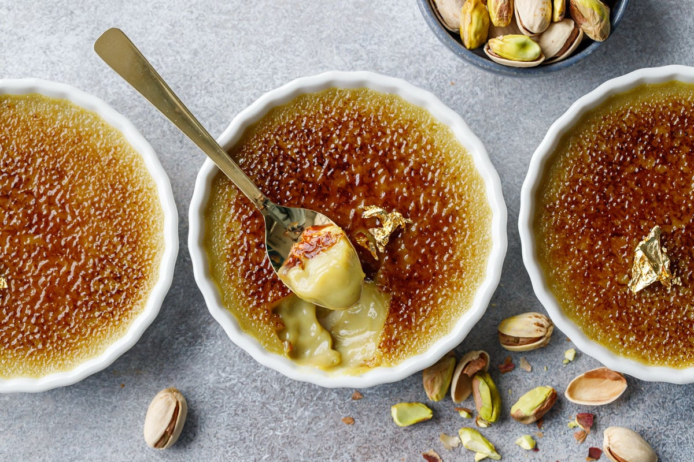

Crème Brûlée is a classic French dessert featuring a rich custard base topped with a layer of hardened caramelized sugar. This elegant dessert combines contrasting textures - the smooth, creamy custard and the brittle caramel crust - for a truly luxurious experience. Despite its sophisticated reputation, it's surprisingly simple to make with just a few quality ingredients.
Ingredients
- 2 cups heavy cream
- 1 vanilla bean, split lengthwise (or 1 tsp vanilla extract)
- 5 large egg yolks
- 1/2 cup granulated sugar, plus extra for topping
- Pinch of salt
- Boiling water for water bath
- Fresh berries for garnish (optional)
Preparation
This classic French dessert requires careful temperature control to achieve the perfect silky texture. The custard is gently baked in a water bath, then chilled before the signature caramelized sugar topping is created with a kitchen torch or under the broiler.
Chef's Tips
- For the smoothest texture, strain the custard mixture before baking.
- Ensure the water bath comes halfway up the sides of the ramekins.
- Chill the custards thoroughly (at least 4 hours) before caramelizing the sugar.
- Use a kitchen torch for the most even caramelization of the sugar topping.